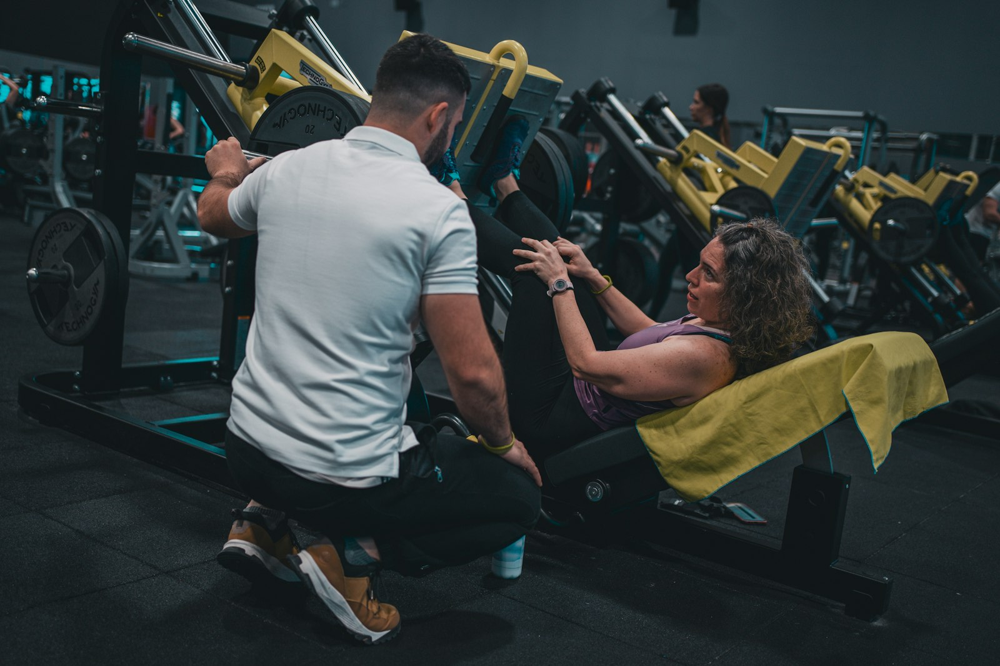
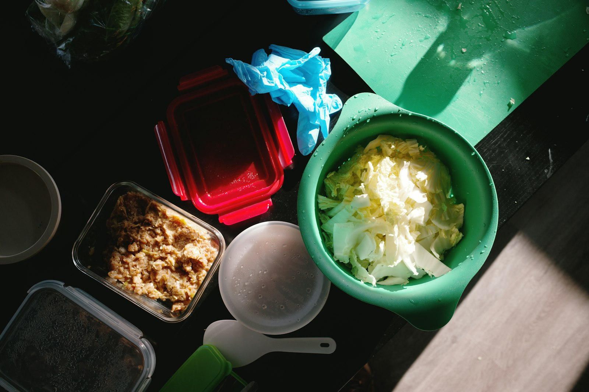
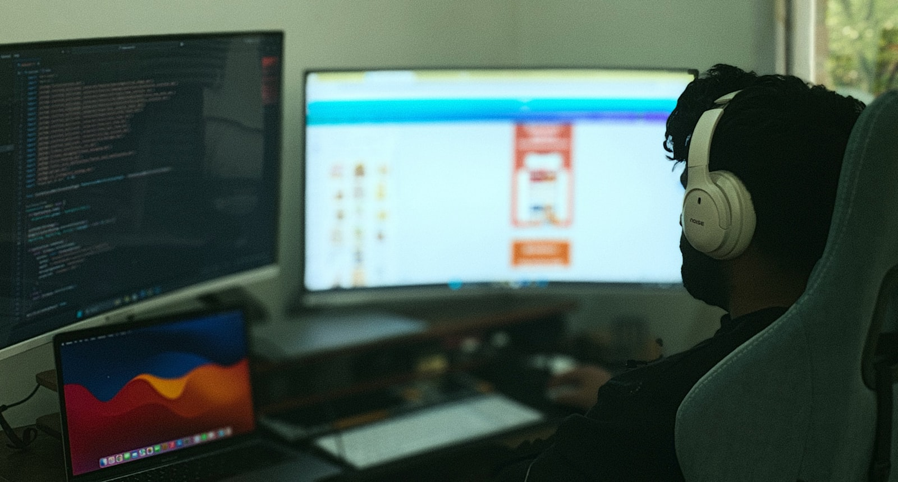

Aug 2024 - May 2026
Master of Science, Computer Science
University of Colorado Boulder, USA
GPA: 4.0 / 4.0
Building
Machine learning engineer pursuing an M.S. in Computer Science at CU Boulder, focused on building GenAI and backend systems that are practical, reliable, and production-ready.
I build agentic workflows, RAG pipelines, and ML services with LangGraph, FastAPI, and modern cloud tooling.
Most recently, I worked as a Machine Learning Intern at The Sprouting Company, where I built datasets for sprouted seed image classification, evaluated custom CNNs, EfficientNet-B2, and prompt-engineered GPT-5 for fungal detection, and compared model accuracy, API cost, and AWS deployment tradeoffs for production use.
Before that, I was a Machine Learning Engineer at Treosoft IT Solutions and a Software Engineer Intern at Ford Motor Company, where I shipped recommendation systems for 100K+ daily transactions, built Python and SQL ETL pipelines, developed LangChain-based RAG systems with FAISS and Cohere Rerank, and created internal search tools powered by OpenAI embeddings.
I also completed research at National Institute of Technology Puducherry, with work published through IEEE, Springer, and Computational Biology and Chemistry. Highlights include a Best Paper Award at IEEE IConSCEPT 2023, AWS GameDay Winner 2025, and 2nd Place at the CU Boulder Expo 2026.
Got an interesting opportunity? Get in touch.
Technologies I work with daily
 LangGraph
LangGraph
 Cloud Run
Cloud Run
 Vertex AI
Vertex AI
 FAISS
FAISS
 ChromaDB
ChromaDB
Last Updated on April 2026
Pursuing a Master of Science in Computer Science at the University of Colorado Boulder while building LLM applications, RAG systems, FastAPI backends, and applied machine learning pipelines with an emphasis on real deployment tradeoffs.
University of Colorado Boulder, USA
GPA: 4.0 / 4.0
National Institute of Technology Puducherry, India
GPA: 8.5 / 10
The Sprouting Company
Treosoft IT Solutions
Ford Motor Company
National Institute of Technology Puducherry
Selected projects across agentic systems, full-stack AI products, and applied machine learning.

Injury-aware workout planning app built with LangGraph, FastAPI, and Streamlit. Trainer and physiotherapist agents review plans before the final program reaches the user.

Food-waste reduction app that turns fridge images into ingredient-aware recipes using FastAPI, PostgreSQL, Cloud Run, and Vertex AI.

Local code refactoring agent with a self-healing loop that plans changes, runs tests, validates AST safety, and retries failed edits automatically.
Experimental repository for exploring multi-agent retrieval flows, document reasoning patterns, and research-focused orchestration ideas around RAG systems.
Music mood modeling pipeline using LastFM tags, audio-derived features, and deep learning models to recommend songs based on emotional tone.
Peer-reviewed publications and conference proceedings.
If you are hiring for AI/ML, GenAI, RAG, or backend engineering work, I would be glad to connect.